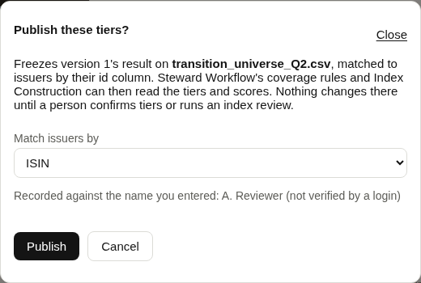

Published tiers
OutputA ratified framework's result, frozen and signed so other functions can read it. Nothing downstream ever reads a live, re-scorable result.
Published snapshot
| Field | Content |
|---|---|
| Framework | id, version, name |
| Table | dataset id and name, as-of date |
| Matching | the id column used to match issuers |
| Sign-off | published by, published at, note |
| Rows | entity id, name, score, tier, tier name, rank, rank min/max, status (scored, excluded, insufficient) |
Who reads it
| Reader | How |
|---|---|
| Steward Workflow | Coverage rules read decision.<framework_id>.tier and score as company fields. Nothing changes there until a person confirms tiers. |
| Index Construction | Joins the scores in an index; nothing changes until a person runs an index review. |
Other ways out
| Route | What it does |
|---|---|
| CSV export | The ranked outcome from the Results tab. |
| Template on a run | Attach a framework to an Extraction, Financials, TNFD or Transition Plan run. It is copied into the run folder and scores the run when every company is done (decision.json). A failure there is recorded, never fails the run. |
| Publish from a run | Stricter than the studio: the version must be ratified, the run finished, and no scored column missing. |
| Template import | A template file becomes a new framework at v1, as a draft. Ratification does not travel with a file. |
In the tool
Screenshots of Decision Studio running on the sample table, taken with the app as it is on main.


Functions applied
What runs at this step, in order, with an example. Blue rows run on GoRules ZEN; the rest is Python in backend/arp/decision/.
| Function | Engine | Example |
|---|---|---|
publish | Python | Sample table with id_column='ISIN' → 24 rows: 18 scored, 6 excluded or insufficient. |
publish | Python | With no company_id/issuer_id/entity_id/id column the API needs id_column named; the studio's Publish dialog now sends it (default: the reference column, ISIN here). |
templates.score_run | Python | Run finishes → the attached framework scores it and decision.json is written; a failure is recorded, never fails the run. |
Code and formulas
The formula each function applies, and its source as it is in the repository.
find_id_columnbackend/arp/decision/publish.py:17–19The first column named company_id, issuer_id, entity_id or id (case-insensitive); none → publishing needs one named.
Python source (3 lines)
def find_id_column(dataset: Dataset) -> str | None:
by_lower = {c.lower(): c for c in dataset.columns}
return next((by_lower[c] for c in ID_COLUMNS if c in by_lower), None)publishbackend/arp/decision/publish.py:22–67Freezes one framework version's result on one table, rows matched to issuers by the id column.
Python source (46 lines)
def publish(
dataset: Dataset,
config: MechanismConfig,
result: DecisionResult,
*,
published_by: str,
id_column: str | None = None,
note: str = "",
) -> PublishedDecision:
if not config.ratified:
raise ValueError(f"{config.name} v{config.version} is not ratified; only a ratified framework can be published.")
if not published_by.strip():
raise ValueError("Publishing needs published_by.")
column = id_column or find_id_column(dataset)
if column is None or column not in dataset.columns:
raise ValueError(f"No id column to match entities to issuers (looked for {', '.join(ID_COLUMNS)}); name one explicitly.")
# apply_mechanism emits one entity per dataset row, in row order.
if len(result.entities) != len(dataset.rows):
raise ValueError("The result does not line up with the dataset rows.")
rows = [
PublishedRow(
entity_id=str(row.get(column) or "").strip(),
name=e.name,
score=e.score,
tier=e.tier,
tier_name=e.tier_name,
rank=e.rank,
rank_min=e.rank_min,
rank_max=e.rank_max,
status=e.status,
)
for row, e in zip(dataset.rows, result.entities, strict=True)
if str(row.get(column) or "").strip()
]
return PublishedDecision(
framework_id=config.framework_id,
framework_version=config.version,
framework_name=config.name,
dataset_id=dataset.dataset_id,
dataset_name=dataset.name,
as_of=dataset.as_of,
id_column=column,
published_by=published_by.strip(),
note=note,
rows=rows,
)